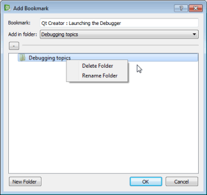

Add bookmarks to help pages
You can add bookmarks to useful help pages to easily find them later in the Bookmarks view. You can either use the page title as the bookmark or change it to any text. You can organize the bookmarks in folders in the view.

To add a bookmark to an open help page:
- Click the (Add Bookmark) button on the toolbar.
- In the Add Bookmark dialog, click OK to save the page title as a bookmark in the selected folder.
Import and export bookmarks
To import and export bookmarks, select Preferences > Help > General > Import Bookmarks or Export Bookmarks.
See also Find information in Qt documentation.